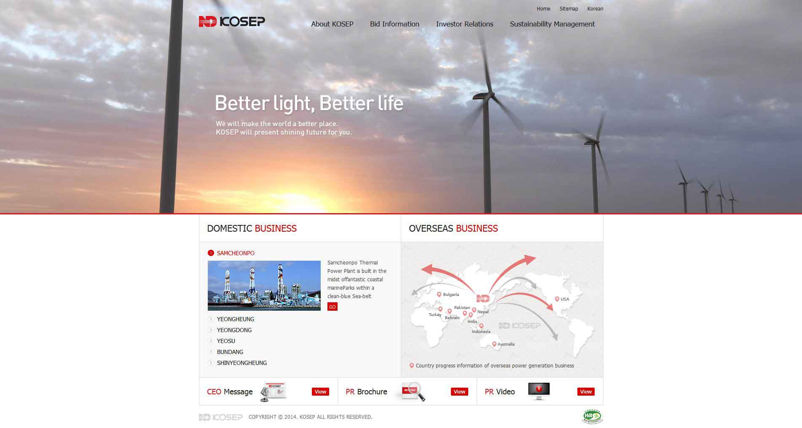
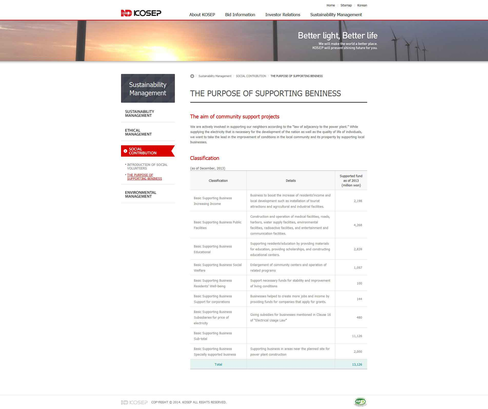
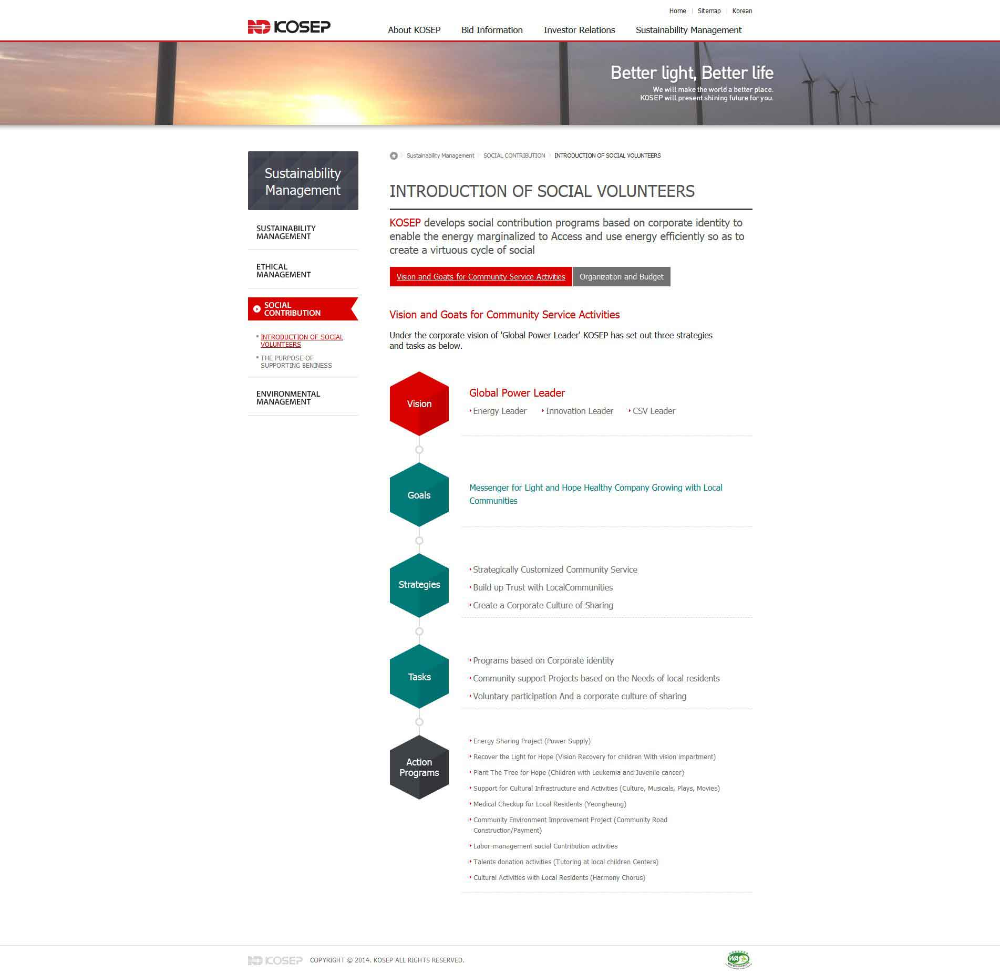

WORK
- 참여도 : 30%
- 작업환경 : HTML5, CSS3, jQUERY, Javascript, Adobe Photoshop
- 담당업무 : 웹 접근성 검수, Investor Relations, Sustainability Management
- 기간 : 2014.03.03 ~ 2014.05.02
- 고객사 : 한국남동발전(주)
- 성과 :
- 웹 접근성 인증 마크 획득
- 익스플로러(ie8~) 및 모던 브라우저 크로스브라우징
- Semantic Markup 퍼블리싱
- 사이트 바로가기 : http://www.kosep.co.kr/kosep/en/main.do
- 
- 
- 